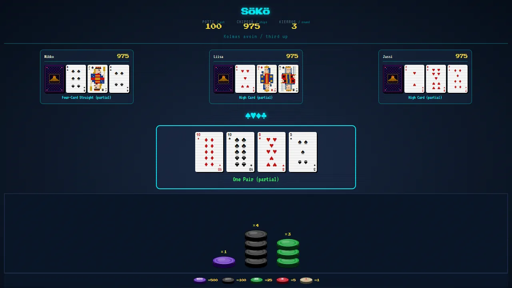
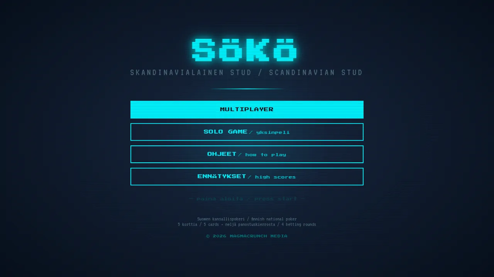
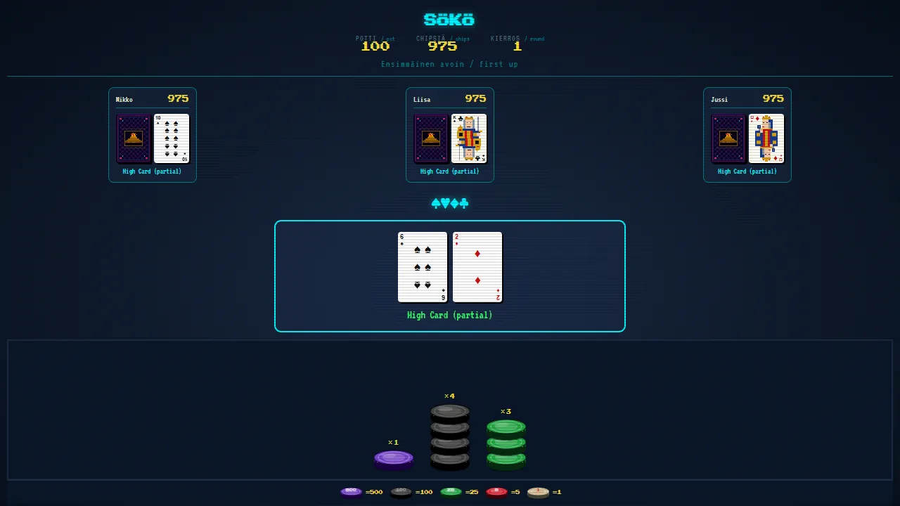

scandinavian stud · five-card poker with a finnish twist
Sökö, Finland's national poker: five-card stud with one hole card, four face-up cards and four rounds of betting.
Two hands set it apart, the four-card flush and the four-card straight, and both beat a pair. Play three computer opponents or friends online, at a table written in Finnish with English glosses.


game by magmacrunch media